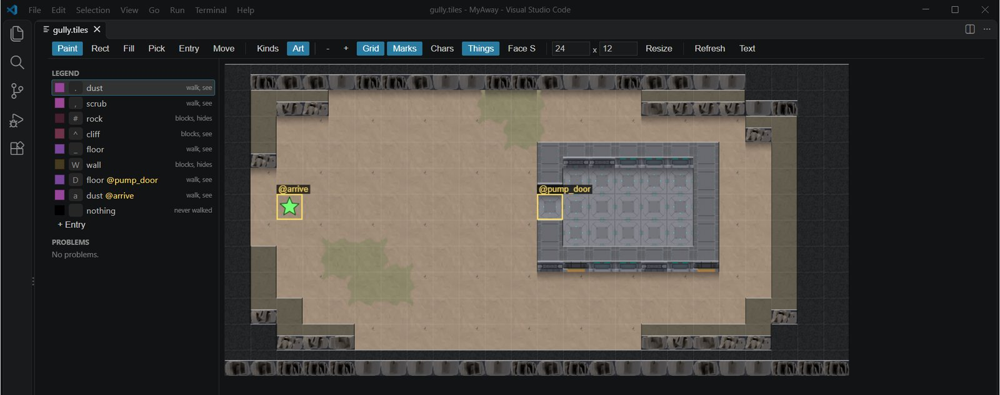

Class 3, Lecture 8 - The Tile Map Editor, part 1¶
What you will have at the end¶
A map of your own: a dry gully with a pump house in it. Dust, scrub and rock outside, four walls and a floor inside, and a gap in one wall where a door will go.
You will have made a new area file, drawn on it with the Tile Map Editor, beamed a crew member into it and walked through the gap.

The Tile Map Editor in VS Code withgully.tiles open in Art view: the legend down the left, the arrive mark at the west end, and the pump house with its door mark in the west wall.
You make one new file today, ground\gully.tiles. Nothing else in the mission changes.
The video¶
About 5 minutes. Subtitles are available in the player.
Before you start¶
- The mission you made in Lecture 7,
MyAway, untouched.sbs lint MyAwaysaysclean. - The
MyAwayfolder open in VS Code, and trusted. The Tile Map Editor is part of the Artemis AMD add-on you installed in Class 1, Lecture 3. - A command prompt open in
C:\Cosmos\data\missions.
Words for this lecture:
| Word | Meaning |
|---|---|
| Area file | A text file ending .tiles. One file is one map |
| Header | The lines at the top of an area file that say what the area is |
| Legend | The list that says what each character in the map means |
| Kind | A sort of ground: dust, rock, floor, wall. The tileset file lists them |
| Mark | A name for one or more cells, so that a record can say "stand here" |
| Entry | The cell where somebody who beams down stands |
Two ways to make every change¶
An area file is plain text. The Tile Map Editor is a second way to look at the same file and to change it. Whatever you do with the mouse, the editor writes into the text, and you can always press Text on its toolbar and read what it wrote.
So this page gives every step as text you can type. Where the editor is quicker, the step says what to click as well. Use whichever you like. The file is what the game reads.
If the editor ever does something this page does not describe, press Text, fix the file by hand, and carry on.
Step 1 - A new file¶
- In VS Code, find the
groundfolder in the list of files on the left. Right-click it and choose New File... - Type
gully.tilesand press Enter.
The new file opens in the Tile Map Editor. It is empty, so the editor has nothing to draw. Press Text on its toolbar. You get an empty page.
The name of the file does not matter to the game. What matters is that it ends .tiles
and is somewhere inside the mission folder.
Step 2 - The header, the legend and the ground¶
Type this into the empty page. The spaces at the start of the six legend lines are two spaces each.
# The dry gully east of the relay yard, and the pump house that stands in it.
area: gully
title: The Dry Gully
tileset: starter
size: 24x12
legend:
.: dust
,: scrub
#: rock
^: cliff
_: floor
W: wall
---
^^^^^^^^^^^^^^^^^^^^^^^^
^###......,,....####^^^^
^#.........,........##^^
^#..........WWWWWWW..#^^
^...........W_____W..#^^
^...........W_____W..#^^
^...........W_____W..#^^
^#..,,......WWWWWWW..#^^
^#...,,..............#^^
^##.................##^^
^^###...........#####^^^
^^^^^^^^^^^^^^^^^^^^^^^^
Save with Ctrl+S.
The first line starts with #. It is a note to yourself, and the game skips it. A note
has to start at the very left edge of the line.
| Line | Means |
|---|---|
area: gully |
This area's key. Every area in a mission needs its own |
title: The Dry Gully |
What the crew is shown: the Beam app on the handheld names the area by it |
tileset: starter |
Its kinds of ground come from starter.tileset, the file you read in Lecture 7 |
size: 24x12 |
24 cells across and 12 down. A small x, and no spaces |
legend: |
The start of the legend. It has nothing after the colon |
--- |
The end of the top part. Everything under it is the map |
The six legend lines use six of the seven kinds in starter.tileset. Each row of the map
is 24 characters long, and there are 12 rows.
Check it:
When an area file has nothing wrong with it, lint does not mention it at all.
Step 3 - Look at it in the editor¶
Go back to the picture. At the top right of the text page there is a button whose tip
reads Open in Tile Map / Tileset Editor. Press it. If you cannot find it, close the
tab and click gully.tiles in the file list again.
What is on the screen, read from the add-on's own files. Nobody has checked this page against a real screen yet:
| Part | What it holds |
|---|---|
| The toolbar, across the top | Tools: Paint, Rect, Fill, Pick, Entry, Move. Then Kinds and Art. Then - and + to zoom, four switches, two boxes and Resize, and Refresh and Text |
| Legend, on the left | One row for each legend line: its color, its character, its kind, and whether it can be walked. A last row named nothing |
| Problems, under it | What lint would say about this file. No problems. when there is nothing |
| The map, in the middle | Your 24 by 12 cells |
| The bottom line | The cell under the mouse and its kind; the area's name and size; and which art it found |
Try three things. None of them changes the file.
- Press Kinds, then Art. Kinds colors each cell by its kind and hatches the ones
nobody can walk on. Art draws the map the way the game will. The key
Aswitches between them. - Move the mouse over the map and watch the bottom line. Over the top left cell it reads
0, 0 cliff blocks, see. Find cell12, 5. It is wall. - Look at the pump house. It is a box with no way in.
Step 4 - A door¶
In the game this is the gap the crew walks through, in the west wall of the pump house. A door on a map is two things. It is a cell you can walk through, in a wall you cannot. And it is a mark, so that in Lecture 10 a door can be stood on it.
In the editor:
- Under the legend, press + Entry. A small form opens.
- In Kind, type
floor. In Mark, typepump_door. In Character, type a capitalD. Press OK. - The legend has a new row,
D floor @pump_door, and it is selected. Press Paint on the toolbar. - Click cell
12, 5, the middle of the pump house's west wall. Watch the bottom line to find it. - Save with Ctrl+S.
Or in the text: add one line at the end of the legend, and change one character in the sixth row of the map.
Press Text and look, whichever way you did it. The editor wrote exactly those two changes and touched nothing else.
A mistake with the mouse is undone with Ctrl+Z, like any other edit. The right mouse
button paints nothing: a hole in the map, drawn black, that nobody can walk on.
Step 5 - A mark to arrive on¶
The party needs somewhere to stand when it beams down: in Step 9 it is where the Beam app puts you. Make a second mark, on the open ground at the west end.
In the editor: + Entry, Kind dust, Mark arrive, Character a small a, OK.
Then Paint, and click cell 2, 5.
Or in the text:
A character with a mark still has a kind. a is dust: it is drawn as dust and walked on
as dust. The mark only gives the cell a name.
You can paint a mark onto more than one cell. Then the mark is all of those cells together, and something sent to it stands on the first one, reading from the top left.
Step 6 - The entry¶
Tell the area which cell is the way in. In the text, add one line to the header, under
tileset::
Save. In the editor a green star now stands on cell 2, 5.
The editor has a tool for this too. Press Entry and click a cell, and it writes the
cell's numbers for you: entry: 2, 5. Both spellings work. The name is the better one,
because it still points at the right place after you redraw the map.
That is the whole file. It should read:
# The dry gully east of the relay yard, and the pump house that stands in it.
area: gully
title: The Dry Gully
tileset: starter
entry: arrive
size: 24x12
legend:
.: dust
,: scrub
#: rock
^: cliff
_: floor
W: wall
D: floor @pump_door
a: dust @arrive
---
^^^^^^^^^^^^^^^^^^^^^^^^
^###......,,....####^^^^
^#.........,........##^^
^#..........WWWWWWW..#^^
^...........W_____W..#^^
^.a.........D_____W..#^^
^...........W_____W..#^^
^#..,,......WWWWWWW..#^^
^#...,,..............#^^
^##.................##^^
^^###...........#####^^^
^^^^^^^^^^^^^^^^^^^^^^^^
Compare yours with it character by character before you go on. Lectures 9 to 12 stand things on this map by their cell numbers, so your map has to be this map.
The same file is in this lecture's example\ground folder.
Step 7 - More of the editor¶
You will not need these today. Try each one, then undo it with Ctrl+Z.
| Tool | Key | What it does |
|---|---|---|
| Paint | B |
Paints the selected legend row. Drag to paint a line |
| Rect | R |
Drag out a filled box. Hold Shift as you let go for an outline: four walls in one drag |
| Fill | F |
Fills the whole patch the clicked cell belongs to |
| Pick | I |
Selects the legend row of the cell you click |
| Entry | E |
Writes entry: as the cell you click |
The two boxes and Resize change the size of the map. The editor then writes the
size: line for you. A map made bigger gets nothing in its new cells, for you to
paint.
Double-click a legend row to change its kind or its mark.
What the editor does not do: it has no boxes for area:, title: or tileset:. Those
three you type, in Text.
Step 8 - Check it¶
It should say clean. Here is what it says about the mistakes people make. Each row was
tried on the finished file, one change at a time.
| The mistake | What lint says |
|---|---|
entry: arival |
tiles-entry, an error: entry 'arival' is neither a mark on this map nor x, y |
The a line says rock |
tiles-entry: entry 2, 5 is rock - nobody beamed there can move |
An x in the map, and no x in the legend |
tiles-unknown-char, an error: 'x' is not in the legend - the whole area will not load |
A small w where the legend has W |
The same. Capitals matter |
_: flor |
tiles-unknown-kind, an error: kind 'flor' is not in starter.tileset - it draws nothing and cannot be walked |
| A mark in the legend that is drawn nowhere | tiles-mark-unplaced |
| The door cell painted back to wall | tiles-mark-unplaced, about @pump_door |
W in the legend twice |
tiles-legend-duplicate: the later line wins |
tileset: startr |
tiles-unknown-tileset |
The --- line missing |
tiles-syntax, an error: no '---' line, so there is no map |
The area: line missing |
tiles-syntax, an error: no 'area:' name |
size: 24 by 12 |
tiles-syntax, an error: cannot read size '24 by 12' |
| A legend line with no spaces in front | tiles-syntax, and tiles-unknown-char for every cell drawn with it |
A legend key of two characters, ar: dust |
tiles-syntax: legend key must be one character |
area: landing, the same key as the yard |
tiles-duplicate-area: Two files cannot be one area. In the game only one of the two maps was loaded, and here it was the gully. The yard was gone, and none of the starter's seven props and people was placed |
A map row longer than size: says |
tiles-size-cut: everything past column 24 is cut off and is not in the game |
size: 20x10, with a 24 by 12 map drawn under it |
tiles-size-cut, once for the columns and once for the rows. The game cuts the map to 20 by 10 |
An error means the area will not load at all. Fix the first one and run lint again.
Lint prints a finding about an area file under a heading of its own:
== ground\gully.tiles (tiles) ==
[ERROR] line 5:8: entry 'arival' is neither a mark on this map nor x, y (tiles-entry)
The same findings are in the editor's Problems list, and a red corner marks the cell.
What lint cannot see¶
All of these lint clean.
| The mistake | What happens |
|---|---|
| A space in the middle of a row | A hole. That cell is nothing: black, and never walked |
No entry: line |
Whoever beams in stands on the cell nearest the middle that can be walked. Here that was the doorway, at 12, 5 |
The file saved as gully.tiles.txt |
The area does not exist. Nothing on the Beam app |
| Nothing leads to the area | Lint says nothing. Today that is true of your gully: Lecture 9 joins it on |
Three things that look like mistakes and are not. With no size: line the map is as
wide as its longest row: yours came out 24 by 12 without it. With no title: line the
crew is shown the key, gully. And the file does not have to be in the ground
folder: saved beside mission.amd, it loaded just the same.
Step 9 - Play it¶
Nothing in the mission leads to the gully yet. The ship's transporter can still put you there.
- Press the handheld icon, Boarding Party, Kesh Relay, BEAM DOWN. You are on the landing pad, as before.
- On the handheld, open Beam. It lists the other places the ship can put you. There is one: To The Dry Gully. Press it.
- You are standing on your
arrivemark, at cell 2, 5. Only the ground you can see from there is drawn. The rest of the gully, the pump house too, stays black until somebody has seen it. - Click inside the pump house, black or not: the walk is worked out on the real map. You walk in through the gap in the wall, and the house is drawn.
- Click a wall. You walk up to it and stop.
- Open Beam again and go back To Kesh Relay.
That was done by a script for this page: a stand-in console, the Beam app's own button, and three clicks on the map. Then it was played in the game itself for the video's pictures: there the handheld shows no words when it beams you, the map simply changes.
If you cannot find the Beam app, there is another way in. In story.mast, on the card at
the end, change area="landing" to area="gully". The party then beams down into the
gully. Change it back when you have looked.
If something goes wrong¶
| What you see | Why | What to do |
|---|---|---|
gully.tiles opens as plain text, with no picture |
The add-on is not installed, or the folder is not trusted | Class 1, Lecture 3, Steps 2 and 5 |
| The editor's bottom line says the language server is not running | The folder is not trusted, or the add-on is still starting | Trust the folder; wait; press Refresh |
| Every cell is a flat color in Art | The art packs were not found. The bottom line names what is missing | Lecture 7, "If something goes wrong" |
| Magenta cells | A character in the map that is not in the legend | Add a legend line for it, or repaint the cells |
| Beam lists nothing | The area did not load. Lint has an error for it | Run sbs lint MyAway |
| You painted with the wrong row and saved | Ctrl+Z still works after a save. Or fix the row in Text |
Exercise¶
- Give the pump house a window. Make a new legend row first: + Entry, kind
cliff, no mark, character a smallc. Paint it over cell18, 5, in the east wall. Look at it in Kinds. A cliff can be seen across and not walked. Undo both changes when you have looked. - With Rect and Shift, draw a second small building south of the pump house, in wall. Give it a floor with Fill. Run lint. Then undo all of it.
- Break the file on purpose, one change at a time, and read what lint says: misspell
arrivein theentry:line; type a smallwinto a wall. Put each back.
Then answer on paper:
- What are the cell numbers of the four corners of the pump house floor?
- Which line of the header would you change to make the crew see a different name?
- Your legend has eight rows. How many of them can be walked on?
Checkpoint¶
You are done when all four are true:
ground\gully.tilesreads the same as the block at the end of Step 6, andsbs lint MyAwaysaysclean.- You have added a legend row and painted with it, in the editor or in the text.
- You have stood in your own pump house.
- You can say what
area:,title:,tileset:,entry:andsize:each do.
Next¶
Lecture 9 joins the gully to the yard, adds a third area under the pump house, and stands the first things on your maps.
Further reading¶
Nothing here is needed for Lecture 9.
- "The Tile Map Editor" in the library documentation, under Tooling.
- "Ground tile maps" in the library documentation: "An area file" and "A tileset file".
Download this lecture's finished files (a zip of its example folder).